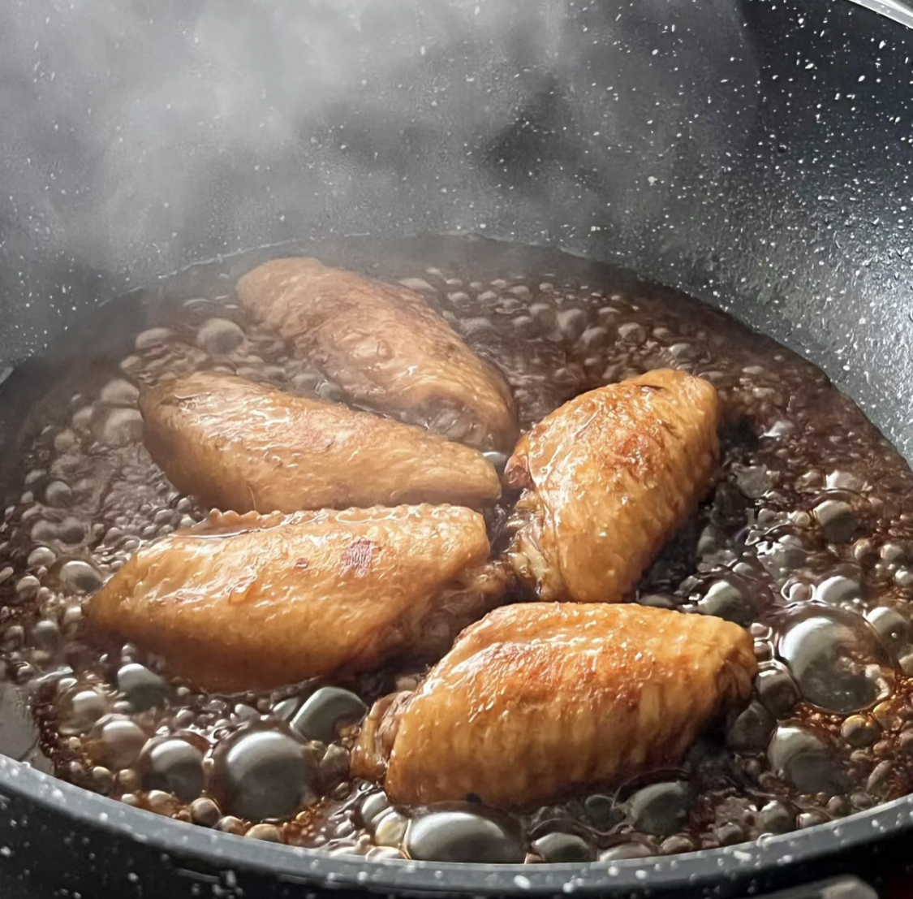

Recipes
Chicken Curry
Origin: Japan
Source: Family Recipe
Category: Main Dish

Japanese Chicken Curry.jpg
Unlike Indian or Thai curry, Japanese curry is more savory than spicy. It’s an exemplary comfort food and one of the most-loved home-cooked dishes in Japan.
Recipe Ingredients- skinless, boneless chicken breast
- 1 tablespoon olive oil
- 1 pinch salt and ground black pepper
- water
- 1 package curry sauce mix
- 1 can peas
- 5 new potatoes, halved
- 1 package sliced cremini mushrooms
- 2 medium carrots, chopped
- 1 medium onion, chopped
- 2 cups jasmine rice
- Place chicken in a large, deep skillet. Drizzle with olive oil and season with salt and pepper on both sides. Add 1/3 cup water to the pan, cover, and cook over medium heat until no longer pink in the center and the juices run clear, about 20 minutes.
- While chicken is cooking, pour 2 cups water into a microwave-safe bowl. Break curry sauce mix into pieces and add to water. Heat in the microwave on high for 3 1/2 minutes; remove and stir until sauce mix has completely dissolved.
- Remove chicken from the skillet. Cut into cubes, return to the skillet, and pour curry sauce over top. Stir in peas, potatoes, mushrooms, carrots, and onion. Bring to a boil, then lower heat and simmer until vegetables are tender, about 30 minutes.
- Meanwhile, bring remaining water and rice to a boil in a saucepan. Reduce heat to medium-low, cover, and simmer until rice is tender and water has been absorbed, 20 to 25 minutes.
- Scoop rice into bowls and serve curry on top.
Additional Food Images

curry sauce.jpeg
curry sauce

raw chicken breast.jpeg
raw chicken breast

rice.jpeg
rice
Guacamole
Origin: Mexico
Source: My Recipe
Category: Appetizer

guacamole.jpg
Guacamole is a Mexican dip made from mashed avocados, tomatoes, onions, cilantro, lime juice, and chili pepper, creating a creamy, zesty, and versatile condiment often enjoyed with tortilla chips, tacos, and more.
Recipe Ingredients- Avocado
- Lime
- Salt
- Onion
- Tomato
- Cilantro
- Slice three ripe avocados in half
- Scoop them into a mixing bowl.
- Use a fork to gently mash them
- Add the onions, tomatoes, cilantro, jalapeno pepper, garlic, lime juice and salt and stir everything together.
Additional Food Images

avocado_chips.jpg
Chips and guacamole

taco.jpg
Guacamole in a taco

guacamole_2.jpg
Guacamole in a bowl
Coca-Cola Chicken Wings
Origin: China
Source: Family Recipe
Category: Main Dish

coca_cola_chicken_wings.jpg
I learnt how to cook Coca-Cola chicken wings from my mother, and I've since tweaked her recipe to better suit my family's palate, making it less sweet. While the cooking process remains straightforward, the result is incredibly flavorful, and once you've tried it, you'll understand its delicious appeal!
Recipe Ingredients- Chicken wings
- Scallions
- Ginger slices
- Cooking wine
- Dark soy sauce
- A can of coke
- Wash and place chicken wings in a bowl
- Add scallions, ginger slices, cooking wine, dark soy sauce and salt to the washed chicken wings, and mix them well
- Cover the bowl with plastic wrap and marinate the chicken wings for 1 hour
- Put the right amount of oil in the pot, and put the marinated chicken wings into the pot and fry it until golden brown on both sides
- After fry the chicken wings until golden brown on both sides, then pour a can of coke into the pan and bring to a boil
- Continue to cook for an additional 2-3 minutes until the glaze has thickened and coats the wings nicely
- Transfer the Coca-Cola glazed chicken wings to a serving platter
Additional Food Images

chicken_wings_chopsticks.jpg
A chicken wing picked up by chopsticks
boils_in_coke.jpg
Chicken wings boiled in coke

chicken-wings_and_rice_cake.jpg
Coca-cola chicken wings served with rice cake